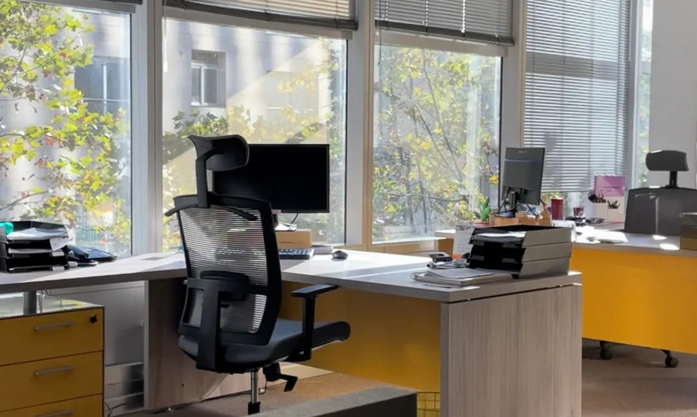

En Salvadis trabajamos con empresas, aseguradoras y operadores industriales que requieren soluciones seguras y eficientes en la gestión de mercancías y productos químicos. En esta sección encontrarás respuestas a las preguntas más habituales sobre nuestros servicios, procesos de colaboración y alcance operativo.
Salvadis ofrece soluciones integrales para la gestión de mercancías industriales y productos químicos, incluyendo salvamento de productos siniestrados, valoración, compra-venta, retirada, distribución y destrucción conforme a normativa.
No exclusivamente. Aunque estamos especializados en productos químicos, también gestionamos mercancías industriales, excedentes, stocks inmovilizados y materiales no conformes.
Sí. Realizamos inspecciones técnicas y valoraciones en casos de daños por agua, fuego, impactos, rotura de cadena de frío o caducidad, determinando la mejor salida para cada material.
El proceso comienza con el análisis del material, seguido de inspección, toma de muestras si es necesario, valoración técnica y definición de la mejor solución: recuperación, distribución o destrucción.
Sí. Nuestro equipo puede desplazarse al punto donde se encuentre el material para realizar inspecciones, recogida de muestras o coordinar la retirada de mercancías.
Sí. Colaboramos habitualmente con aseguradoras, comisarios de averías, gabinetes periciales y operadores logísticos.
No disponemos de almacenes propios. Trabajamos con una red de almacenes colaboradores externos, certificados y cualificados, que nos permiten garantizar un almacenaje seguro y conforme a normativa.
Sí. Los almacenes colaboradores cumplen con la normativa aplicable según el tipo de mercancía, incluyendo ADR, seguridad química y requisitos medioambientales.
Sí. Operamos tanto a nivel nacional como internacional, especialmente en Europa y África, gracias a nuestra red de colaboradores logísticos.
Sí. Todas las operaciones se realizan conforme a la normativa aplicable, garantizando trazabilidad documental, confidencialidad y seguridad.
En ese caso, gestionamos su retirada y destrucción mediante gestores autorizados, asegurando el reciclaje o tratamiento adecuado y aportando la documentación correspondiente.
Aplicamos un modelo basado en la recuperación y valorización de mercancías siempre que sea posible, reduciendo residuos y fomentando prácticas sostenibles en la industria.
Puedes ponerte en contacto con nosotros por teléfono o correo electrónico a través de la página de contacto. Nuestro equipo te asesorará de forma personalizada.